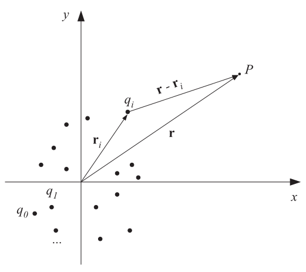

Визуализация векторных полей#
Рассмотрим способы визуализации векторных и скалярных полей на примере электрического поля, создаваемого несколькими электрическими зарядами.
Как известно из курса физики, на пробный заряд \(Q\), помещённый в электрическое поле заряда \(q_0\), действует сила Кулона:
где \(k\) - совокупность постоянных вида \(k = 1 / (4 \pi \varepsilon_0)\); \(\varepsilon_0\) - диэлектрическая постоянная: \(\varepsilon \approx 8.85419 \cdot 10^{-12}\) Ф\(\cdot\)м\(^{-1}\); \(\mathbf{r}_0\) и \(\mathbf{r}\) - координаты (радиус-векторы) зарядов \(q_0\) и \(Q\) соответственно. Радиус-вектор в трёхмерном пространстве есть набор трёх координат: \(\mathbf{r} = ( \begin{matrix} x & y & z \end{matrix} ).\)
Электрическое поле, по определению, есть отношение электрической силы, действующей на заряд \(Q\), при стремлении величины этого заряда к нулю:
где \(\mathbf{r}\) - радиус-вектор произвольной точки пространства, в которой требуется посчитать величину поля.
Электрическое поле может создаваться произвольным количеством \(n\) зарядов \(q_i\). На рисунке ниже показана расчётная схема. В этом случае результирующее поле рассчитывается, исходя из принципа суперпозиции - суммарное поле есть сумма полей отдельных зарядов:

Электрическое поле - это векторное поле. Это значит, что в каждой точке пространства \(\mathbf{r}\) определена не только величина поля - электрическая напряжённость \(E_0\), - но и его направление. Именно вдоль направления поля \(\mathbf{E}\) и действует сила Кулона. Одним из способов визуализации любого векторного поля является построение его силовых линий. Этим мы сейчас и займёмся - покажем векторное поле () для заданной системы зарядов.
Визуализация векторного поля#
С визуализацией нам поможет библиотека Matplotlib.
%matplotlib inline
import matplotlib.pyplot as plt
# Для работы с массивами
import numpy as np
# Для векторной алгебры
import numpy.linalg as lina
# Вспомогательные константы
from scipy.constants import pi, epsilon_0
Инициализируем постоянную \(k\) с программным именем K (переменная, набранная caps’ом, интерпретируется Python как постоянная):
K = 1 / (4*pi*epsilon_0)
Расчёт поля двух зарядов#
Программно опишем поле ():
def make_field(qs, rs):
def field(mesh):
mx, my = mesh
r = np.vstack([mx.flatten(), my.flatten()])
return K*superposition(qs, rs, r).reshape(np.shape(mesh))
return field
def superposition(qs, rs, r):
return np.sum([
calc_partial_field(qi, ri, r)
for qi, ri in zip(qs, rs)
], axis=0)
def calc_partial_field(qi, ri, r):
dr = r.T - ri
return qi*dr.T / lina.norm(dr, axis=1)**3
Данная функция принимает на вход массив зарядов qs, массив их координат rs и возвращает функцию E, зависящую только от r - координаты произвольной точки.
Функция E соответствует полю ().
Создание расчётной сетки#
Опишем функцию создания расчётной сетки в виде множества равномерно распределённых точек двумерного пространства \(Oxy\). В этом случае любой радиус-вектор состоит из двух компонент: \(\mathbf{r} = (\begin{matrix} x & y \end{matrix})\).
def create_mesh(x_minmax: tuple, y_minmax: tuple, n: int):
# Равномерно разбиваем оси
x = np.linspace(*x_minmax, n)
y = np.linspace(*y_minmax, n)
# Создаём сетку
return np.asarray(np.meshgrid(x, y))
Заодно создадим функцию визуализации сетки для лучшего её представления:
def plot_mesh2d(mesh, figax=None, **kw):
if figax is None:
fig, ax = plt.subplots()
else:
fig, ax = figax
x, y = mesh
ax.plot(x.flatten(), y.flatten(), ls="", **kw)
ax.set(xlabel="$x$, м", ylabel="$y$, м")
return fig, ax
На созданной с помощью create_mesh сетке (в её точках) мы и будем считать электрическое поле.
Исходные данные#
Для начала расмотрим электрическое поле, создаваемое двумя одинаковыми зарядами с противоположными знаками:
# Зададим размеры расчётной области:
# - по оси x: от -2 м до 2 м;
# - по оси y: от -2 м до 2 м
x_minmax = -2, 2
y_minmax = -2, 2
# Поместим 2 заряда: слева +1, справа -1
qs = np.array([1, -1])
# Расположим их в точках (-1; 0) и (1; 0)
rs = np.array([[-1, 0], [1, 0]])
Готово. Можно переходить к расчёту.
Расчёт поля#
Сперва необходимо построить расчётную сетку (расчётные точки):
# Создадим расчётную сетку, разбив оси x и y на 20 точек
mesh = create_mesh(x_minmax, y_minmax, n=20)
Отобразим расчётные точки для проверки корректности сетки:
fig, ax = plot_mesh2d(
mesh, c="grey", marker=".", label="Расчётные точки"
)
# Заодно покажем расположение зарядов
ax.plot(
rs[0, 0], rs[0, 1],
ls="", c="red", marker="o", label="Заряд +1"
)
ax.plot(
rs[1, 0], rs[1, 1],
ls="", c="blue", marker="o", label="Заряд -1"
)
ax.legend(loc="upper right");
В серых точках и будет рассчитано векторное поле \(\mathbf{E}\):
# Рассчитываем поле
E_fun = make_field(qs, rs)
Ex, Ey = E_fun(mesh)
print("Например, (Ex; Ey) в левой нижней точке:",
(Ex[0, 0], Ey[0, 0]))
Например, (Ex; Ey) в левой нижней точке: (-228632984.6497247, -1224250083.568939)
Поле рассчитано. Теперь его можно визуализировать.
Визуализация#
За отрисовку векторных полей в Matplotlib отвечает функция streamplot:
fig, ax = plt.subplots()
mx, my = mesh
# Силовые линии
ax.streamplot(
mx, my, Ex, Ey,
density=1.5, color="k", linewidth=1
)
# Сами заряды
ax.plot(
rs[0, 0], rs[0, 1],
ls="", c="red", marker="o", label="Заряд +1"
)
ax.plot(
rs[1, 0], rs[1, 1],
ls="", c="blue", marker="o", label="Заряд -1"
)
# И для красоты
ax.set(
xlabel="$x$, м", ylabel="$y$, м"
)
ax.legend(loc="upper right");
Получили вполне непохую картину - силовые линии поля выходят из положительного заряда и входят в заряд отрицательный.
Поле четырёх зарядов#
В качестве дополнительного примера рассмотрим случай четырёх зарядов - двух положительных и двух отрицательных.
Исходные данные:
# Зададим размеры расчётной области:
# - по оси x: от -2 м до 2 м;
# - по оси y: от -2 м до 2 м
x_minmax = -2, 2
y_minmax = -2, 2
# Разместим 4 заряда в форме креста:
# - отрицательные заряды - по вертикали;
# - положительные - по горизонтали
qs = np.array([-1, -1, 1, 1])
rs = np.array([[-1, 0], [1, 0], [0, -1], [0, 1]])
Рассчитываем поле:
# Создадим расчётную сетку, разбив оси x и y на 50 точек
mesh = create_mesh(x_minmax, y_minmax, n=50)
# Считаем поле в узлах сетки
E_fun = make_field(qs, rs)
Ex, Ey = E_fun(mesh)
Строим график:
fig, ax = plt.subplots()
mx, my = mesh
# Для переменной величины силовых линий,
# пропорциональной величине поля
E_mag = np.sqrt(Ex**2 + Ey**2)
linewidth = np.log(E_mag) / 15
# Силовые линии
ax.streamplot(
mx, my, Ex, Ey,
density=2, color="k", linewidth=linewidth
)
# Сами заряды
ax.plot(
rs[:2, 0], rs[:2, 1],
ls="", c="blue", marker="o", label="Заряд -1"
)
ax.plot(
rs[2:, 0], rs[2:, 1],
ls="", c="red", marker="o", label="Заряд +1"
)
# И для красоты
ax.set(
xlabel="$x$, м", ylabel="$y$, м"
)
ax.legend(loc="upper right");
Упражнения#
…